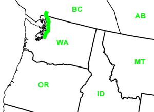

Day Thirty-Four
Vashon Island, WA- Vancouver, B.C.
Date: 07/14/2002
Distance: 229 miles
Weather: overcast
We left Vashon Island today well fed, well slept, and without our exhuasted Sophia. She did, however, substitute her presence with some carrots and plums she packed in our cooler. On the mainland again, we finally found that REI. It was a pretty neato building, reminscent of LL Bean headquarters in Freeport, Maine. There was a huge climbing wall, and everything else you would possible need for your outdoor adventure. This included some GPS (global positioning system), which Corin bought for Jared as his much belated birthday present. We stayed at REI for lunch and then headed North. On the way we endulged in some amazing fresh berries and sugar snap peas from a local farmstand.
Our original plan was to visit the San Juan Islands. But, we missed an already too expensive ferry, and decided that spending the weekend on Vashon Island would have to do for our Pudget Sound island experience. So, on to Canada!
It was getting late when we neared Vancouver, so we decided to stay at a local guesthouse, and chose the pet friendly "Apricot Cat." (Now, everyone write that down. If you are ever in the area we want you to patronize this place.) The woman who runs the "Apricot Cat" has a lovely old house outside of downtown, and makes her guests breakfast. She was very sweet, because when we were unable to stay there after all (our car did not fit in her garage, and could not be left on the street), she went out of her way to help us find a new place. She also reccomended a local sushi restaurant for dinner.
So, driving out of town we stopped at the reccomended KOKO. But, as our luck today would have it, the restaurant was closed. Desparate, we ended up eating at a Subway, and staying at our first private campground. What the Burnaby Cariboo Campground lacked in privacy it made up for with militaty efficiency, a heated pool and hot tub, clean facilities, and location. Unfortunately, privacy was not the only cavet, the place was directly next to the highway AND an incredibly loud booming train that passed by every two hours the entire night. When the train wasn't shaking the ground, the baby in the tent next to us chose to cry.
Good night Moon. Good night freight train. Good night unlucky day.